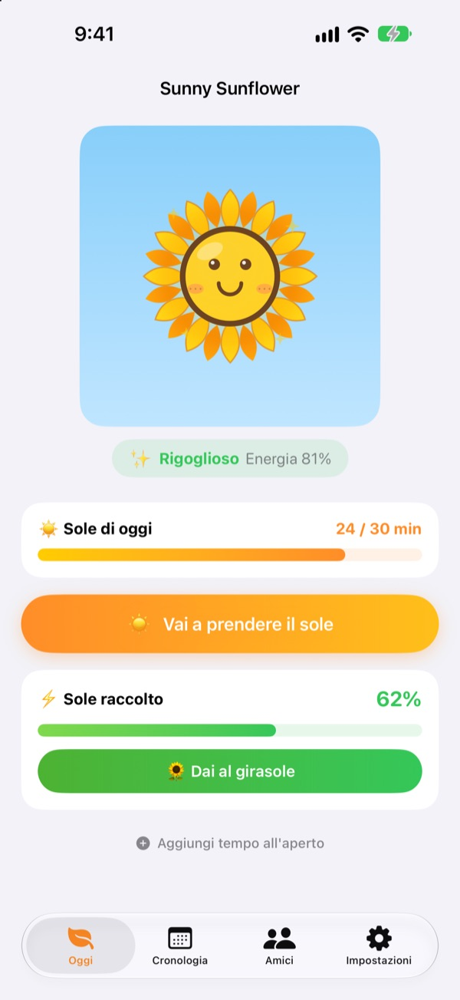
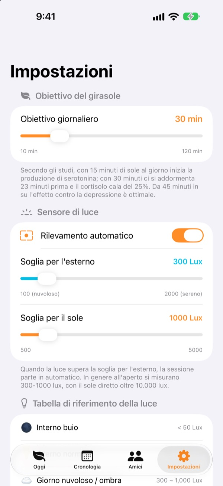
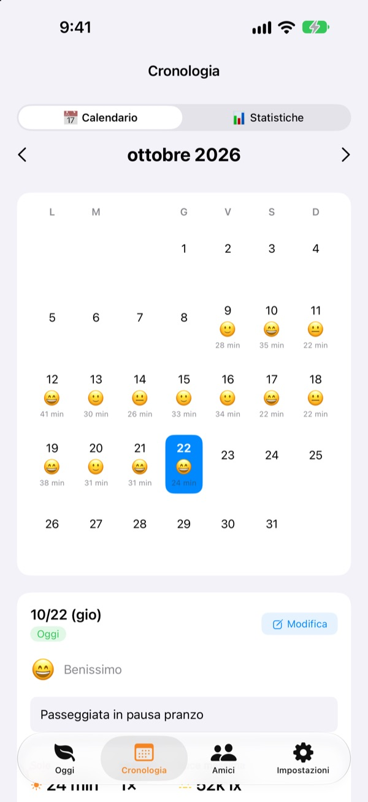
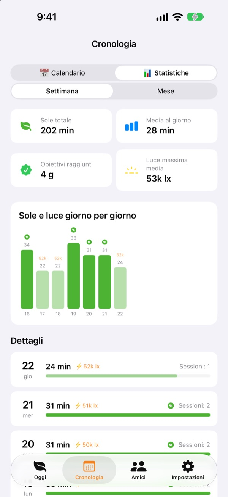

Il sole di oggi
fa crescere il tuo girasole
Appena esci, il tempo al sole si conta da solo. Dai al girasole il sole raccolto e diventa rigoglioso. Se te ne dimentichi per qualche giorno, comincia ad appassire.
Tutte le funzioni sono gratuite. I dati restano sul tuo dispositivo.

Raccogli un po' di sole
Scegli quanta luce c'è e per quanto tempo, prendi il sole e dallo a un girasole che sta già piegando la testa.
Quanti minuti di sole hai preso oggi?
Due passi per andare al lavoro, una pausa pranzo veloce. Se passi la giornata al chiuso, ti accorgi solo la sera di aver visto a malapena la luce del giorno. Sunny Sunflower trasforma il tempo all'aperto in numeri, e il tuo girasole ti aspetta per la passeggiata di domani.
Esci e misura da sola
Tocca Vai a prendere il sole ed esci. L'app stima la luminosità intorno a te dai dati di esposizione della fotocamera anteriore. Quando la luce resta da esterno per circa 30 secondi, inizia la registrazione. Non scatta né salva mai foto.
Dopo, il sensore si accende solo 20 secondi ogni 2 minuti per risparmiare batteria.

Sole e umore, giorno per giorno
Nel calendario ogni giorno ha il suo tempo al sole, un'emoji dell'umore e una breve nota. Eri fuori senza registrare? Con Aggiungi tempo all'aperto aggiungi da 5 a 120 minuti.

Settimana e mese a colpo d'occhio
Le statistiche settimanali e mensili mostrano i giorni in cui hai raggiunto l'obiettivo e la tua media al sole. Imposta un obiettivo giornaliero da 10 a 120 minuti e vedi subito nella schermata principale quanto ti manca oggi.
I widget della schermata Home e di blocco, e la Dynamic Island, mostrano il sole di oggi e come sta il tuo girasole.

Tre passi per iniziare
- 1
Scegli l'obiettivo
Si parte da 30 minuti. Nelle impostazioni puoi scegliere da 10 a 120.
- 2
Esci al sole
Tocca
Vai a prendere il soleed esci con l'app aperta. L'accesso alla fotocamera viene chiesto una volta sola. - 3
Nutri il girasole
Tocca
Dai al girasoleper trasformare il sole raccolto in energia.
Come la luce diventa sole
- Sotto i 300 lux
- Luce debole: non conta come tempo al sole
- Da 300 a 1.000 lux
- Esterno/nuvoloso: dall'1 al 3% ogni 10 minuti
- Da 1.000 a 10.000 lux
- Sole: dal 3 al 33% ogni 10 minuti
- Da 10.000 lux in su
- Sole forte: oltre il 33% ogni 10 minuti
- Sole raccolto
- minuti × lux medi ÷ 3.000 (al massimo 100% per sessione)
- Energia del girasole
- cala del 2,5% all'ora, circa il 60% al giorno
Nelle impostazioni puoi regolare la soglia per l'esterno tra 100 e 2.000 lux. Il valore predefinito è 300 lux.
Domande frequenti
Come misura il sole?
Stima la luminosità intorno a te (l'illuminamento) dai dati di esposizione della fotocamera anteriore. Quando la luce resta da esterno per un po', la registrazione parte da sola. Non scatta né salva foto.
Consuma molta batteria?
Una volta confermato il sole, il sensore non resta acceso: si attiva per circa 20 secondi ogni 2 minuti per ricontrollare, e per il resto basta un timer.
Il mio girasole appassisce di continuo.
Il girasole perde il 2,5% di energia ogni ora. Raccogli sole e tocca Dai al girasole. In una giornata limpida, 15-20 minuti sotto il sole diretto bastano a recuperare un giorno intero.
Ero fuori ma non è stato registrato niente.
Usa Aggiungi tempo all'aperto, in fondo alla schermata principale, per aggiungere da 5 a 120 minuti. Se nei giorni nuvolosi la registrazione fatica a partire, abbassa la soglia per l'esterno nelle impostazioni.
Come funziona la funzione amici?
Se tu e un amico siete vicini (entro 10 m circa) e state entrambi misurando il sole, vi collegate da soli. Con una persona nuova bisogna prima confermare che prendete il sole insieme, poi è automatico. I petali si colorano e in 3 giorni tornano al loro colore, e il tempo passato insieme resta nella scheda Amici. Servono l'app su entrambi i telefoni e l'accesso a Bluetooth e rete locale.
È davvero gratis?
Sì. Niente pubblicità né acquisti, tutte le funzioni incluse. Se ti piace puoi lasciare una mancia nell'app, ma non sblocca niente in più.
Posso fare un backup o trasferire i dati?
Tutto resta sul dispositivo, senza server, e vengono conservati gli ultimi 90 giorni. Non c'è un'esportazione a parte, ma i dati sono inclusi nel normale backup dell'iPhone su iCloud o sul computer.
Come cancello tutti i dati?
Nelle impostazioni dell'app tocca Azzera i dati, oppure elimina l'app. Non si può annullare.
Dove segnalo un problema?
Scrivi all'indirizzo qui sotto o apri una issue su GitHub (github.com/M1zz/SunlightTracker/issues). Modello del dispositivo, versione di iOS e cosa è successo ci aiutano molto. Di solito rispondiamo entro pochi giorni.
Domande o suggerimenti? Scrivi a leeo@kakao.com.